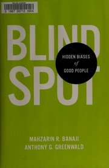

Blindspot: Hidden Biases of Good People
Book·Mahzarin R. Banaji, Anthony G. Greenwald, 2013·盲点

Two designers of the Implicit Association Test discuss research on implicit bias and openly acknowledge the test's limitations.
- Author
- Mahzarin R. Banaji, Anthony G. Greenwald
- Year
- 2013
- Difficulty
- Beginner
- Kind
- Overview
- Schools
- Prejudice Research
- Core theories
- IAT and Implicit Bias
Editions
- English edition Blindspot: Hidden Biases of Good People Mahzarin R. Banaji, Anthony G. Greenwald · Delacorte Press, first edition · 2013 Open Library ↗